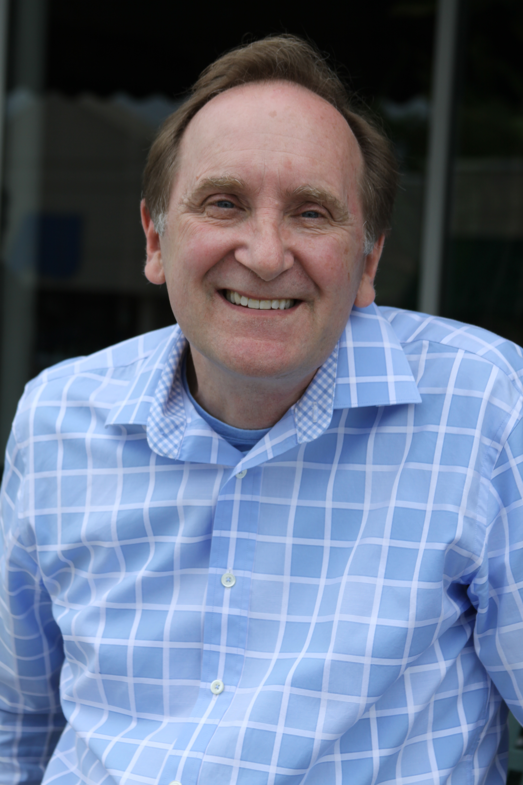

I'm in my second position establishing a Student Support department in a relatively small international school program. I previously worked for five years at Chiang Mai International School in Thailand and am now at Huamao International School in Ningbo, China.
International schools today generally have large numbers of local students. 'International' often means only that the curriculum is taken from western countries and is taught in English. In Chiang Mai, only about 30% of our students were from non-Asian countries and here in Ningbo, nearly all of our students are Chinese. The curriculum in Chiang Mai was rooted in the US Common Core and AP curriculum and here in Ningbo, we follow the IB program from primary through high school.
Special Education overseas looks a bit different, of course. Part of that is cultural - there's still quite a lot of stigma associated with any kind of diagnosis or recognition of difference. It can be hard for parents and teachers to see that identifying learning challenges can be helpful in providing more effective support in class. Fortunately, all major end-of-school exams (such as the SAT or GCSE) now offer accommodations, with proper documentation, and many colleges and universities abroad offer accommodations to students with learning challenges, so that's encouraging more families and teachers to see the value of getting children's needs identified and addressed. The other challenge is finding qualified professionals to provide the diagnosis and specialized treatments. OTs or SLPs or other therapists fluent in a local language and English are often hard to find and they may have long wait times.
And what kind of learning challenges do we see? Much like it is in the US, the majority of our students have dyslexia, followed by ADHD and some students with ASD. Most of these students have a lot of family support and with in-class accommodations and skills practice, are able to succeed in academically challenging programs like the IB and AP. Most days my work ranges from working 1:1 on skills with students or supporting kids in class, to working with teachers on lesson planning to implement Universal Design for Learning models that support all students to creating administrative systems so that the school will continue to offer Student Support even after I've moved on.
Dr. Kevin Miller (kevinmiller432@gmail.com) is an Adjunct Professor at Concordia University and the University of Nebraska-Lincoln both in Nebraska. As a part of a Fulbright grant in 2016, he taught courses at Armenian State Pedagogical University including Educational Assessment, Overview of Speech-Language Pathology and Technology and Communication Disorders. He also initiated a case study examining the inclusionary practices of 2 elementary/middle schools, specifically focusing on how these schools support students who are deaf or hard of hearing. For this study he interviewed special education teachers, general education teachers, administrators, speech-language pathologists, school psychologists, parents and students. He looks forward to publishing his results and presenting them. Dr. Miller was especially impressed with the variety of persons and organizations positively impacting the lives of persons with disabilities by changing perceptions of Armenian society towards persons with disabilites and promoting the passage of laws supporting the inclusion of persons with disabilities in general education classrooms. Despite very limited resources these individuals and groups have made great strides in helping Armenians favor inclusion for all. You may contact him at his email address provided above or at 215-872-4767.
